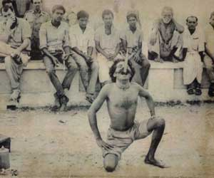

|
| Home | Talent | Cosmetic | Deformity | Abnormal | Ethnological |
Sword Eaters Sword swallowing is arguably the most dangerous and misunderstood of all sideshow stunts. It is dangerous due to the physical proximity of cold steel to the internal organs of the performer and misunderstood as, more than all the sideshow arts, sword swallowing is commonly perceived to be the result of trickery. Sword swallowing is very real. There is no illusion and no trickery involved. Sword swallowing requires patience, precision and dedication as well as bold determination.
The history of sword swallowing begins thousands of years ago in India where fakirs and priests demonstrated the stunt as a means of showing the invulnerability their faith bestowed upon them. From India the art form travelled to China , Greece and Rome where it became a common fixture in festivals and celebrations. References to sword swallowing can be found in 5th century Roman writings as well as 8th century Chinese T’ang Dynasty illustrations. Sword swallowing soon found its way into Japan where it was incorporated into Sangaku, a circus-like form of street entertainment that also featured juggling, tightrope walking, contortion, and fire eating. Sword swallowing also found a home among the whirling Dervishes of the Middle East and from there sword swallowing migrated to Europe in the 13th century where practitioners were prosecuted by the Church.
In North America, sword swallowing was first popularized in 1819, by East Indian sword swallowerRamo Sammee. Perhaps the best known North American sword swallower was Fred McLone, better known to the public as “Chevalier Cliquot”, who performed from 1878 to the early 20th century. The history and longevity of the sword swallowing is remarkable, but the actual physical risks inherent in the stunt, and the dedication required to perform it without harm, are even more so. Few sideshow stunts require as much physical and psychological preparation and desensitization. The gag reflex, a physical response intended to preserve life, must be overcome before a blade can safely pass into the pharynx and esophagus. The numbing of the gag reflex requires psychological fortification as well as physical desensitization. When I learn to swallow swords, I began by probing with a coat hangar. According to the Sword Swallowers Association International (SSAI) most sword swallowers are self-taught. Once the senses are dulled, one must hyper-extend the neck and pass the blade past the pharynx sphincter, into the esophagus, into line with the cardiac opening and eventually into the stomach. The blade passes within millimeters of the aorta as well as the heart and lungs. Injuries often include lacerations, internal bleeding, perforation of the esophagus, stomach, lungs, and other organs in proximity to the path of the sword, as well as intestinal bleeding. Death is also not uncommon, it is estimated that since 1880 there have been a documented 29 deaths attributed to sword swallowing. A cynical public often makes sword swallowing a sideshow stunt with enormous risk and little pay-off. Know-it-all crowd members shouting ‘fake’ following a death-defying sword swallow often destroy the spectacle in a matter of moments. Back when I was performing the stunt I would often diffuse the crowd before the great reveal. I would plunge the coat hanger I used to teach myself the art into my gullet, and then bend my neck forward. I would then withdraw the hangar to display the 90 degree bend I created and the skeptics in the audience would hold their tongues in face of absolute proof. |